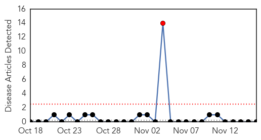
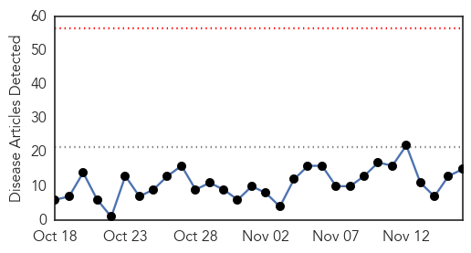
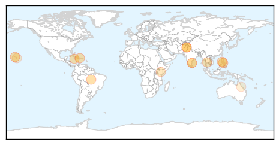

Yellow Fever
30-Day Web Trend
1 alerts, 0 warnings

30-Day Twitter Trend
0 alerts, 0 warnings

Article Locations

Article Confidences

Top Articles:
-
No articles found for Nov 16, 2015
Top Tweets:
-
No tweets found for Nov 16, 2015
Dengue Fever
30-Day Web Trend
0 alerts, 0 warnings

30-Day Twitter Trend
6 alerts, 3 warnings

Article Locations
Article Confidences

Top Articles:
- 0.995
- Dengue outbreak demands preventive steps for future
- 0.994
- 101 cases of dengue fever confirmed on Hawaii Island
- 0.992
- Focus on preventive steps to tackle dengue
- 0.978
- Zika virus awareness starts tomorrow
- 0.974
- Zika Virus Reaches the Caribbean
- 0.952
- Ministry Of Health Urges Vigilance As Zika Virus Is Confirmed In The Caribbean
- 0.934
- Sanofi : Pasteur CEO Olivier Charmeil
- 0.909
- Pakistan: 59 fresh dengue cases in Rawalpindi take total to 4,501
- 0.894
- Light at the end of the tunnel
- 0.893
- Tamil Nadu rains may spark health woes
- 0.866
- PM Prayut urges EOCs to ensure people are safe from dengue fever
- 0.752
- El Niño: food shortages, floods, disease and droughts set to put millions at risk
- 0.585
- “You need to make a decision to be proactive”
- 0.543
- Flooded hospitals turn potential dengue-breeding sites in Chennai - India
- 0.508
- Brisbane news, weather, traffic
Top Tweets:
- 0.899
- Flavivirus news: Outbreak of dengue fever still at peak in Kaohsiung - Taipei Times: Outbreak o... https://t.co/22yLgVwlud pathogenposse
- 0.732
- Flavivirus news: Dengue fever outbreak still rising in Kaohsiung with 287 new cases - Focus Tai... https://t.co/eUVPYPmWfv pathogenposse
- 0.597
- Flavivirus news: Asymptomatic People Transmit Dengue Virus To Mosquitoes - Science 2.0: Asympto... https://t.co/71FxJzbJTy pathogenposse